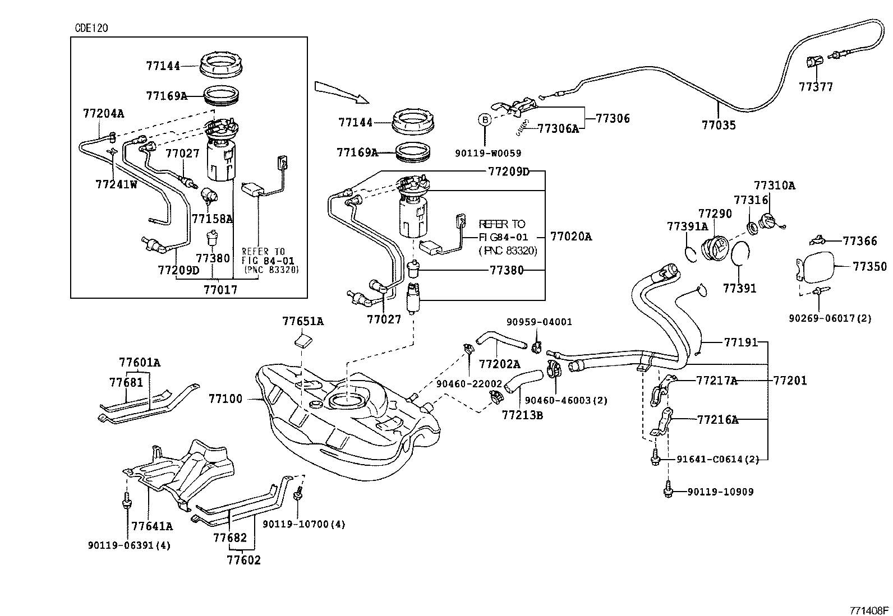

На Toyota Corolla девятого поколения (2000-2006 гг.) с бензиновыми двигателями 1.4, 1.6, 1.8 топливный фильтр находится в бензобаке. Он вмонтирован в специальный топливный узел (модуль) вместе с насосом, фильтром-сеткой и датчиками. Чтобы добраться до модуля, нужно поднять заднее сидение в салоне, и открутить под ним лючок, который и удерживает этот топливный узел.
Возможная информация - 1 вариант
Фильтр тонкой очистки - оригинал
Артикул: 233000D020
Высота: 130 мм
Диаметр корпуса: 110 мм
Аналоги фильтра тонкой очистки
Masuma (оценка: 4.0 ) фильтр MFF-T116
JS Asakashi (оценка: 3.9) фильтр FS 8018
Фильтр грубой очистки (фильтр-сетка)
Артикул 232170D090 - оригинал (цена около 800 руб), популярный заменитель — LEDO 80014LFFB, цена 70 руб. Возможно, что в хетчбеке этот фильтр не используется.
Возможная информация - 2 вариант (совершенно другие парт-номера)
Поиск по VIN-номеру дает вариант, показанный на рисунке, здесь совершенно другие парт-номера.
У хетчбека крепление топливного насоса другое, нежели у прочих моделей в корпусе E120. У прочих моделей крепление делается на винтах, а у хетчбека с помощью пластикового кольца (номер детали 77144 на картинке ниже).
Так же у хетчбека на топливном насосе нет отдельного фильтра грубой очистки, которые есть на других моделях в корпусе Е120. Где он находится - надо разбираться.
